| Eric and I went back to Montana for a week in
September. It was a good time of visiting family, enjoying the
quiet, catching up with church friends, and having some fun. |
|
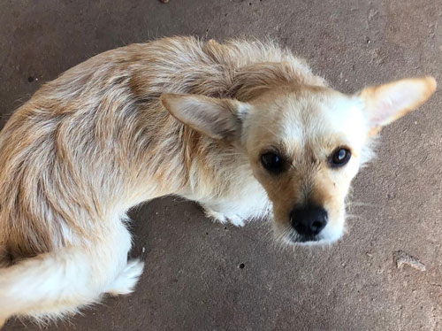 |
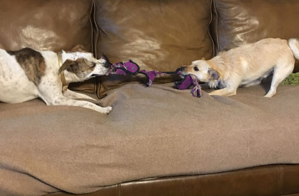 |
| When we boarded Buddy for the first time in August, they sent us this
pitiful photo that nearly broke our hearts. |
So, for this trip we boarded Buddy with our friend, the foster mom who
raised him before we adopted him. He was MUCH happier at her house! |
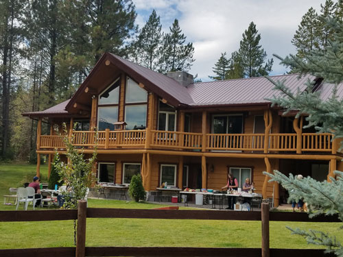 The church had an all-day service/picnic/games day on the Sunday we
were there. |
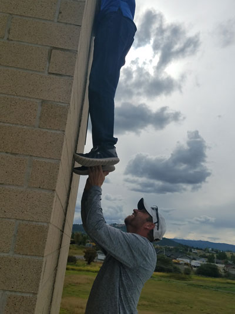 |
| Exploring a commercial property that three of the brothers are looking at. This is how a Casazza deals with the lack of a ladder! |
|
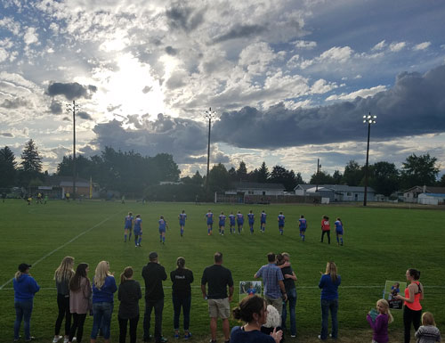 We were able to catch one of Madison's soccer games while we were
there. We |
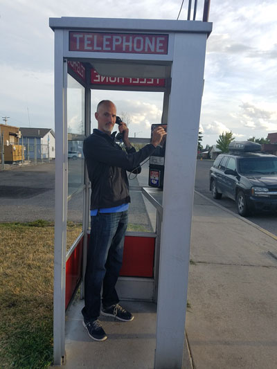 |
| Neither of us have seen a real phone booth in years, so when we saw this in Columbia Falls, we had to take a photo. |
|
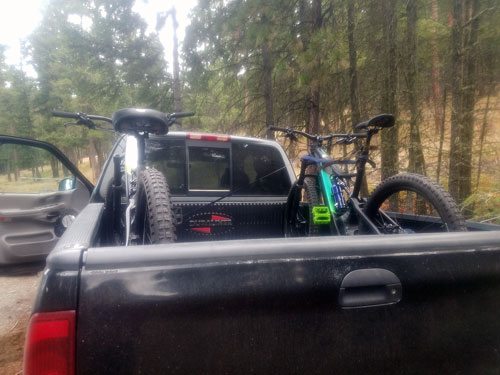 |
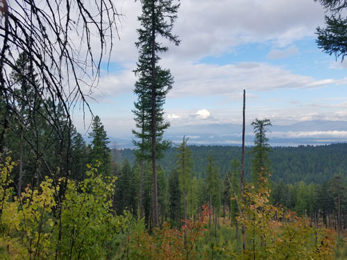 |
| Jeb & Amy own these amazing e-bikes. They very generously allowed
us to borrow them for a ride up into the mountains. It was amazing! Even though I wrecked, I still loved it. |
Views along the ride. |
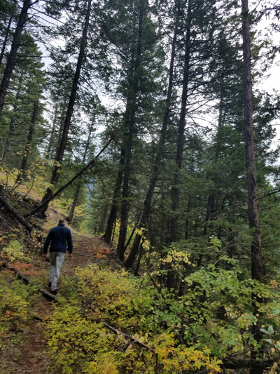 |
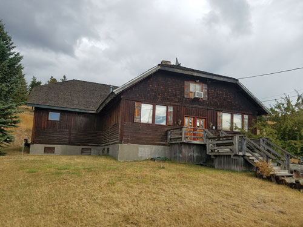 The old Lodge Craft building in Eureka. It was originally the community hall and a roller rink. The owners want to sell and we'd love to help save it, but that's just a dream. |
| Taking a side trail to explore an old abandoned mine. | |
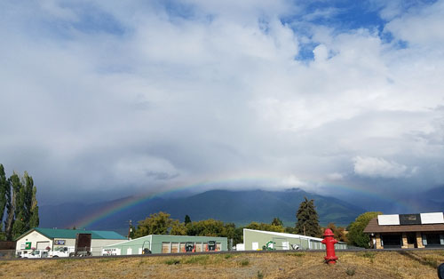 Full rainbow over Eureka. |
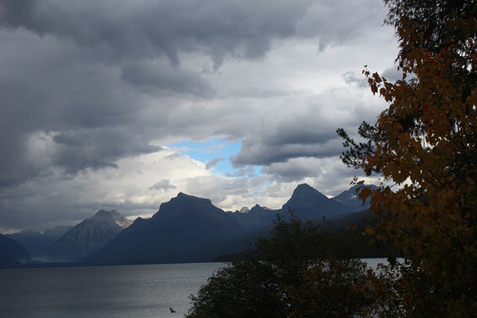 |
| A short trip up to Polebridge allowed us this view of Lake McDonald. | |
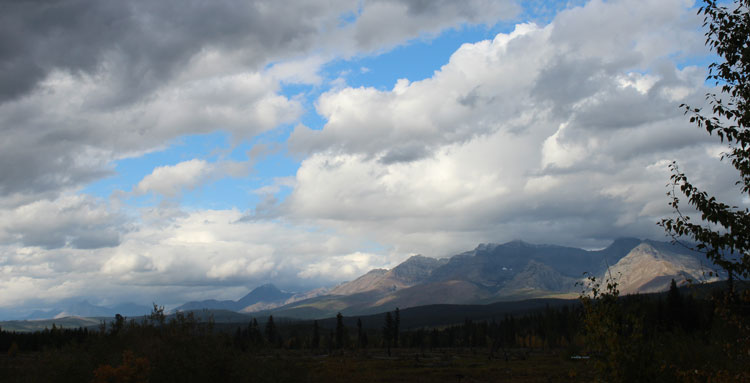 A lovely view of the western side of Glacier Park as seen from Polebridge |
|
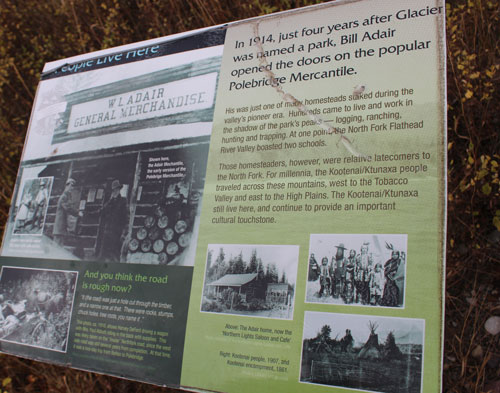 |
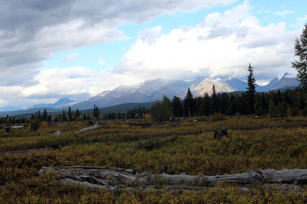 |
| Informational material on the town of Polebridge and the mercantile.
|
A view from the nature trail we walked until we got caught in a short rain
shower.
|
| 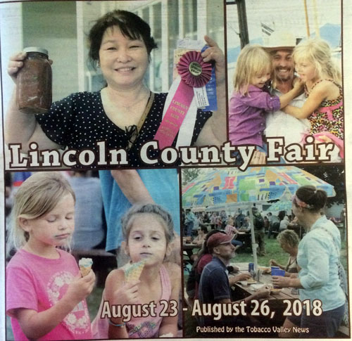 |
|
| Eric made it into the newspaper. This was
an insert about the fair that was in the paper. Eric is in the lower-right photo, eating and talking to our friend Amy. |
|